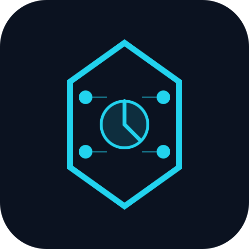

x402 Agent Suite Pro — X Thread Pack
25 posts · tweet upar · graphic neeche · Solana + Base USDC
Order: Copy tweet → post on X → screenshot ya save the graphic box below → attach under same tweet.
Open X-THREAD-POSTING-GUIDE.md for full steps.